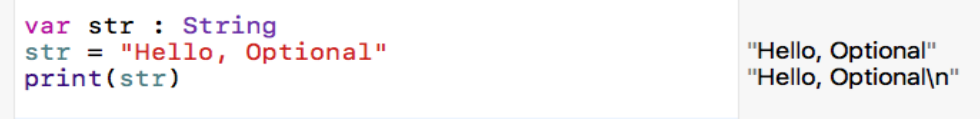
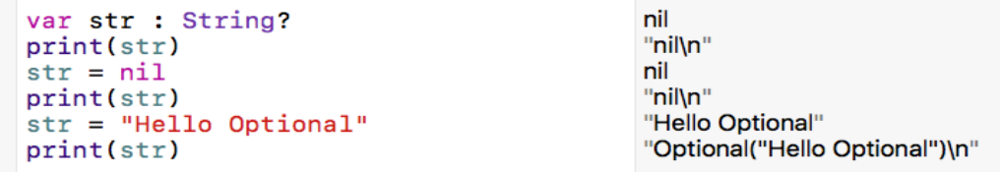
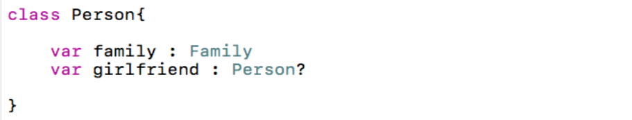
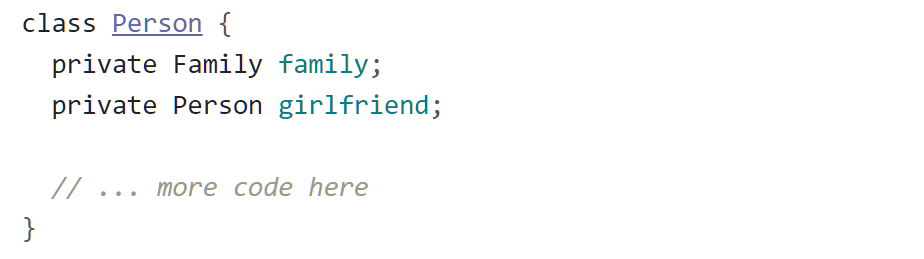
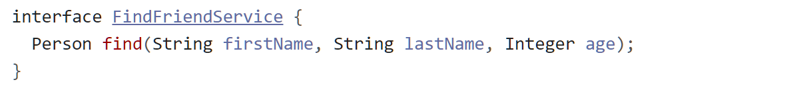
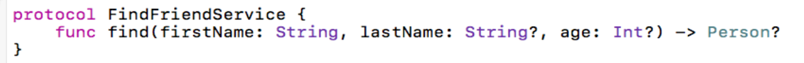
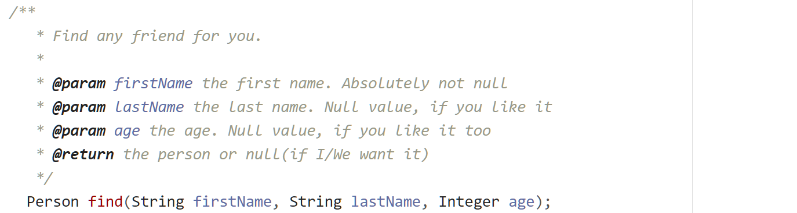
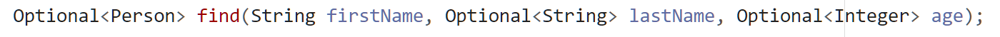

Optional không hề mới, thư viên guava đã cung cấp Optional, ít nhất là cách đây 7 năm(trước 3 năm so với Java 8). Đến năm 2014, Swift ra đời và cung cấp Optional. Đến năm 2016, Kotlin cung cấp Null Safety(cùng khái niệm với Optional) và rất nhiều ngôn ngữ khác cũng có những khái niệm tương tự như Optional.
Theo như document của Oracle, Optional là:
A container object which may or may not contain a non-null value.
Còn Apple thì nói Optional là:
A type that represents either a wrapped value or nil, the absence of a value.
Optional trong Java được định nghĩa như một container object, chứa bên trong là một non-nullable reference. Nếu bạn nhìn vào source code của Optional sẽ thấy đúng là nó “chỉ có vậy”, không hề có sự khác biệt giữa Optional của Java 8 và của guava(đã có từ 2011)
Giải pháp này tương tự như Null Object trong Design Pattern. Tư tưởng của Null Object là thay vì sử dụng một reference có thể null, ta sử dụng một đối tượng thay thế cho reference đó, nhưng ở “trạng thái” null, và thực tế khi sử dụng, thay vì sử dụng những behavior thông thường của reference thì ta cài đè những behavior riêng cho nullable reference. Từ đó, người sử dụng không cần quan tâm đến việc reference đó có null hay không? Vì code implement bên trong đã điều hướng giúp họ rồi.
Lý do tại sao nhiều người chưa dùng Optional?
Mình đã từng hỏi một số người đã biết qua Java 8, liệu họ có dùng Optional không. Câu trả lời luôn là không!
Mình thậm chí còn bắt gặp một bình luận như dưới đây:
Lý do mọi người đưa ra cũng thường là vậy. Suy nghĩ đó là hoàn toàn đúng! Dùng Optional không giúp ích nhiều cho bạn trong việc check null. Nhưng bạn hãy khoan. Optional là … optional, hay như Kotlin họ gọi là Null Safety. Nếu chỉ là check null, thì hãy gọi nó là Null Checker mới phải chứ?
Đứng dưới góc độ là một Java developer, nhiều người nhìn Optional qua cú pháp, từ đó sẽ luôn chỉ thấy check null. Nhưng câu chuyện đằng sau Optional lại là một câu chuyện khác.
Optional không phải Null Checker!
Năm 2014, thay vì Java 8, mình thử Swift , ngôn ngữ vừa được Apple giới thiệu. Và voila! Optional lần đầu tiên xuất hiện trong đời mình. Chúng ta thử tìm hiểu một chút Optional trong Swift nào!
Theo ý hiểu của mình thì, trong Swift, kiểu dữ liệu chia ra 2 loại, để dễ hiểu, mình sẽ gọi là: Non-Optional và Optional.
Optional ở đây chỉ ra rằng reference có thể gán null(nil),
Non-Optional là kiểu mặc định và không thể gán null.
Ví dụ khi ta chỉ khai báo kiểu dữ liệu cho biến là String và không chỉ định gì thêm, có nghĩa biến này là kiểu Non-Optional String. Nếu ta cố gắng gán nil cho nó, compile error sẽ xảy ra ngay.
 không được phép gán nil cho Non-Optional
không được phép gán nil cho Non-Optional
Thay vào đó, ta phải gán giá trị non-nil vào cho biến:

Bây giờ ta khai báo kiểu là Optional bằng cách thêm dấu “?” vào sau kiểu dữ liệu
có thể gán nil cho biến kiểu Optional
Điều tuyệt vời của Optional trong Swift không phải check null mà là bạn sẽ luôn biết(hoặc compiler bắt bạn biết) khi nào cần check null và kiểu của một biến(biết nó có thể null hay không).
Cùng so sánh một số đoạn code khi sử dụng Swift và Java(chưa dùng Optional)


Mỗi người đều có gia đình nên family là non-nullable, nhưng có thể không có bạn gái nên girlfriend sẽ là nullable. Điều này rất dễ thấy với Swift, nhưng Java thì không, bạn không thể phân biệt được.
Tương tự với method:

Nhìn vào method của Java, liệu bạn có biết được parameter nào có thể null, parameter nào không thể null không? Có thể nhiều người sẽ nghĩ đến Document, nhưng sự thật là Document không phải là thứ nhiều dev hứng thú nên rất dễ bị bỏ qua!
Còn với Swift

firstName không được null, lastName và age đều có thể null. Method trên có thể trả về null nếu không tìm thấy Person nào, quá dễ hiểu mà chẳng cần bất kỳ dòng Document nào cả.
Optional trong Java 8?
Cùng năm 2014 đó, Java ra mắt phiên bản 8 và cũng có Optional. Nhưng thật không may, Optional quá dỏm! Dỏm thật sự. Sự thật là Optional trong Java chỉ là một class thông thường mà bất kỳ ai cũng có thể tạo ra và như đã nói ở trên thì guava đã làm từ rất lâu trước đó rồi! Vì nó chỉ là một class thông thường, Java compiler cũng không ủng hộ nên:
- Cú pháp siêu phức tạp
Optional<Integer> number = Optional.of(100); Integer realNumber = number.get(); Optional<Person> girlfriend = Optional.ofNullable(findGirlfriend()); Person yourFriend = findFriend().orElse(new Person()) find("Lan", Optional.ofNullable(getLastName()), Optional.ofNullable(getAge());
Really? Mình không muốn viết cú pháp như vậy đâu(nhưng…cuộc sống mà!)
- không thể tự động “cast” giá trị được.
Trong Swift, bạn có thể viết
number : Int? number = 100
còn với Java, hãy nhìn đoạn code ở trên và tưởng tượng
- không thể check khi compile,
Optional.of(null) // -> Compile bình thường !!
Optional của Java thật tệ, nhưng hãy thử dùng nó!
Sau khi dạo một vòng Swift, nhìn lại Java, chắc nhiều người sẽ nản và hét lên: Tại sao?
Câu trả lời, thật ra đã được nói ở trên. Giống như Swift, Optional trong Java(hay những thứ tương tự trong Groovy, C#, Kotlin hay Haskell) không phải để thay thế những dòng check null của bạn, mục đích hàng đầu của nó là nói cho bạn biết: một value liệu có thể null hay không?
Hãy thử với một số method khá quen thuộc trong JPA/Spring Data JPA/Hibernate(bản mới nhất hiện nay):
Dưới đây là hàm tìm kiếm theo ID của javax.persistence.EntityManager
public <T> T getReference(Class<T> entityClass, Object primaryKey)
vẫn là chức năng đó, nhưng được viết trong JpaRepository
T getOne(ID id)
còn đây là trong CrudRepository
Optional<T> findById(ID id)
Nếu không đọc Document, liệu bạn có biết chuyện gì xảy ra nếu không tìm thấy entity ?
Method thứ nhất sẽ trả về null
Method thứ hai sẽ throw javax.persistence.EntityNotFoundException
Method thứ ba, quá dễ để đoán, sẽ luôn luôn trả về Optional dù có thấy entity hay không, chỉ khác là nó có giá trị(present) hay rỗng(empty/absent).
Hay bạn muốn viết API và muốn nói với đồng nghiệp rằng:
Này, tham số thứ nhất không được null, còn 2 tham số còn lại thì thoải mái nhé. À và nó có thể trả về null đấy nhé
Có thể bạn nghĩ là nên viết như vầy
Nhiều comment dữ dội luôn
Tại sao không viết là

Không may, đồng nghiệp bạn sẽ quạo:
Cái gì thế này?
Hãy nở nụ cười thật tươi và nói: Welcome to Java 8!
Tóm lại
Optional trong Swift có thể tốt hơn Java, Null Safety trong Kotlin có vẻ có ích hơn, nhưng lỗi null reference vẫn sẽ không bao giờ buông tha các dev dùng ngôn ngữ đó. Công cụ có thể quan trọng, nhưng con người mới là yếu tốt quan trọng hơn cả. Bạn vẫn có thể code Java 8 mà không cần dùng Optional, cũng giống như bạn có thể code mà không cần có bất kỳ kiến thức nào về Coding convention, Refactoring *hay Design Pattern. Còn nếu bạn cần Coding convention, Refactoring hay Design Pattern”, hãy thử Optional của Java nhưng tưởng tượng như đang dùng Swift.
Tham khảo
Hãy đọc những tài liệu dưới đây, đừng lười nếu bạn thực sự quan tâm!
Tired of Null Pointer Exceptions? Consider Using Java SE 8's Optional!
Java 8 Optional - Avoid Null and NullPointerException Altogether - and Keep It Pretty - DZone…
Optional Chaining - The Swift Programming Language (Swift 4.2)
Null Safety - Kotlin Programming Language